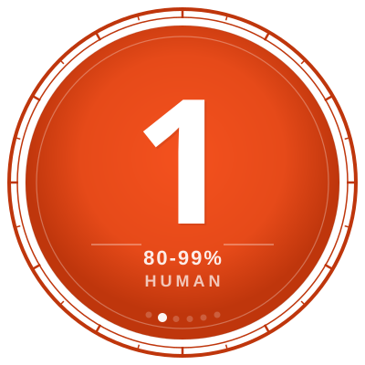
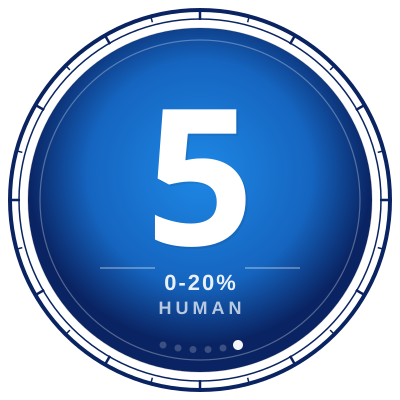

C-AITS
Creative AI Transparency Scale
The binary "AI-generated" vs "human-made" label is useless. Most creative work lives somewhere in between, and that middle ground is where all the interesting decisions happen.
C-AITS is a 0 to 5 scale that gives creators a language to be specific about how AI was involved in their work, and gives audiences the information to make up their own minds about what they're looking at.
The Scale

Level 0: The Soul
100% human. Raw creative output. No AI touched it.

Level 1: Augmented
Human core. AI used for basic assistance: grammar checks, brainstorming, minor suggestions.

Level 2: Hybrid
Human structure and direction, but heavy AI texturing, rendering, or drafting.

Level 3: Synthesized
True 50/50 collaboration. Iterative loop between human and machine.

Level 4: Generated
AI-dominant output via prompt engineering. Human curated and edited.

Level 5: The Machine
Raw AI output. Zero human modification.
How Ratings Are Decided
Each badge carries a percentage representing human agency in the final output. These ranges are the guardrails, not a calculator. The number reflects an honest assessment, not a spreadsheet.
| Level | Human Agency | What It Means |
|---|---|---|
| 0 | 100% | No AI involvement at any stage. |
| 1 | 80 – 99% | AI used for minor tasks: grammar, spellcheck, brainstorming. The work is fundamentally human. |
| 2 | 60 – 80% | Human structure and direction. AI handles drafting, texturing, or rendering under close guidance. |
| 3 | 40 – 60% | Genuine collaboration. Iterative loop where both human and machine shape the result. |
| 4 | 20 – 40% | AI produces the bulk of the output. Human provides direction, curation, and editing. |
| 5 | 0 – 20% | Raw AI output with minimal or no human modification. |
The Questions
Every component gets rated by asking four things:
- Could I have produced this without AI? If yes, AI was a convenience, not a collaborator. That pushes toward 0 or 1.
- How far is the final output from what the AI gave me? If I reworked it substantially, the human percentage goes up. If I used it close to raw, it stays high on the scale.
- Who made the creative decisions? Concept, structure, emotional intent, editorial judgement. If those are mine, the number drops. If AI drove those choices, it climbs.
- Would a skilled practitioner in this discipline recognise my hand in it? This is a gut check. If someone with expertise in the medium can see the human decisions, the rating should reflect that.
What C-AITS Doesn't Track
C-AITS measures human agency in the final output. It does not track which AI tool was used, how many iterations it took, or how long the process ran. Two creators could reach the same level through completely different workflows. The rating reflects the relationship between human and machine in the finished work, not the production diary behind it.
Corrections
Ratings can be revised. If a component's score turns out to be wrong, it gets corrected publicly. The old rating stays visible alongside the new one. Getting it right matters more than looking consistent.
If you have questions about a specific rating, ask. I'll explain how I got there.
How It's Applied
C-AITS is rated per component, not per project. A project's prose might be Level 0 while its concept art is Level 4. Both facts matter, and collapsing them into a single number would hide the truth rather than reveal it.
Every piece of content released from this studio carries its C-AITS rating publicly. See each project's page for a full breakdown.